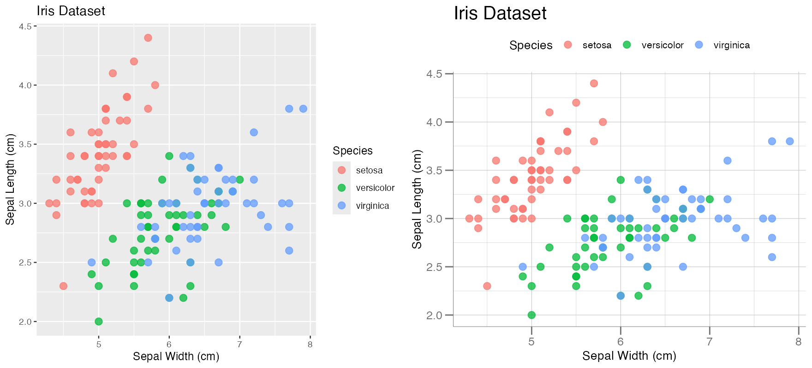
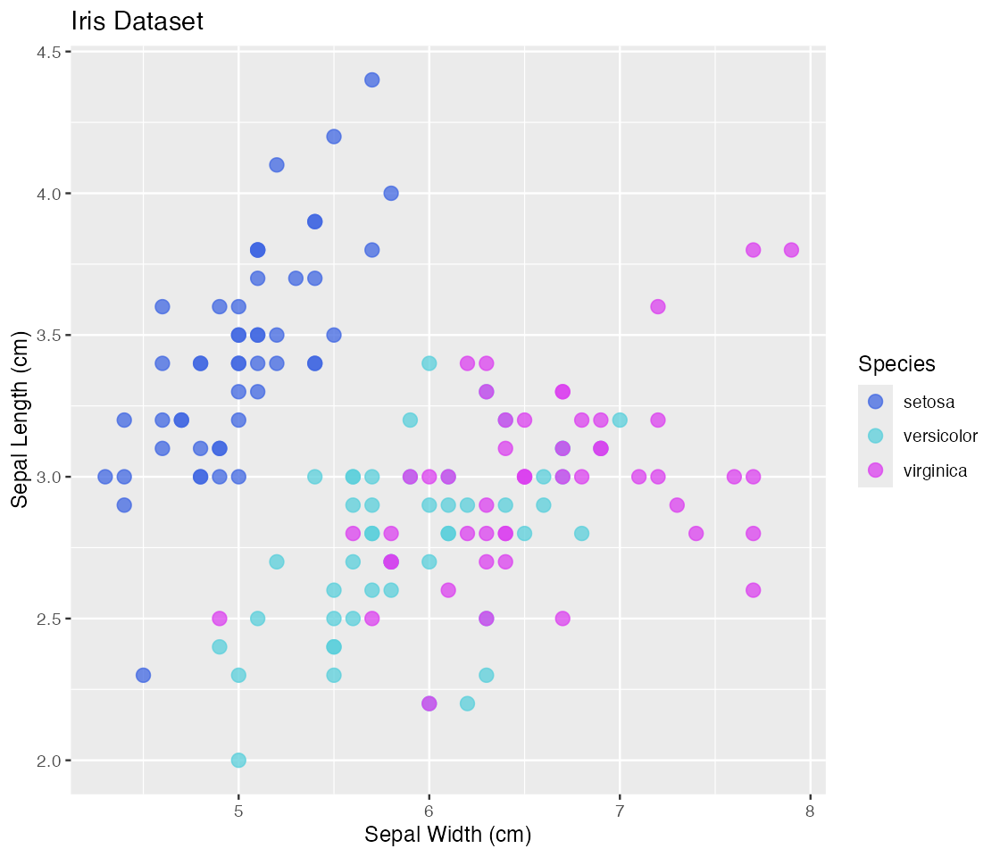

Applying SomaLogic Themes and Palettes
Source:vignettes/themes-and-palettes.Rmd
themes-and-palettes.RmdThis vignette provides an overview of the color palettes, ggplot2 themes, and color
scales available in SomaPlotr. These features can be used
to generate colorful, polished, and visually consistent graphics.
The following packages will be required to run the code in this vignette natively:
Hexadecimal Color Lists
SomaPlotr provides lists that define hexadecimal codes
for colors used in SomaLogic branding and marketing materials. A
hexadecimal (hex) color is specified with the format
#RRGGBB, where the red (RR), green
(GG), and blue (BB) components of the color
are hex values between 00 and FF. The
hexadecimal color lists in SomaPlotr are designed to
clearly distinguish groups and can be applied to a variety of graphics
types, with options for both color and greyscale graphics.
Branding Colors
soma_colors is a list of hex values corresponding to 10
colors from the SomaLogic Operating Co. branding color scheme (prior to
2020), in darker and more subdued shades than what is used today (in
2023).
# Display the hex color codes in the list
soma_colors
#> $purple
#> [1] "#24135F"
#>
#> $lightgreen
#> [1] "#00A499"
#>
#> $lightgrey
#> [1] "#707372"
#>
#> $magenta
#> [1] "#840B55"
#>
#> $lightblue
#> [1] "#006BA6"
#>
#> $yellow
#> [1] "#D69A2D"
#>
#> $darkgreen
#> [1] "#007A53"
#>
#> $darkblue
#> [1] "#1B365D"
#>
#> $darkgrey
#> [1] "#54585A"
#>
#> $blue
#> [1] "#004C97"
# Show a preview of all list colors
scales::show_col(unlist(soma_colors))soma_colors2 contains the exact colors (N = 8) used in
current official SomaLogic branding materials, but contains
fewer values than soma_colors:
soma_colors2
#> $blue
#> [1] "#4067E2"
#>
#> $teal
#> [1] "#59CFDB"
#>
#> $pink
#> [1] "#DB40EF"
#>
#> $yellow
#> [1] "#FFAA0F"
#>
#> $green
#> [1] "#2F9862"
#>
#> $turq
#> [1] "#0B6975"
#>
#> $lightblue
#> [1] "#0077E0"
#>
#> $purple
#> [1] "#170BA5"
scales::show_col(unlist(soma_colors2))Values from these color lists can be directly supplied to visualization utilities (like ggplot2) to designate colors for specific graphical elements:
# Provide color values for individual plot elements
ggplot(iris, aes(x = Species, y = Sepal.Width)) +
geom_boxplot(fill = soma_colors2$teal,
outlier.color = soma_colors2$yellow) +
geom_jitter(color = soma_colors2$pink)When coerced to a vector, the entire palette can be supplied as an argument to base R plotting utilities:
Greys and Risk
SomaPlotr provides two additional lists of convenient
color schemes for non-color or risk-stratified graphics. The first,
soma_colors_greys, contains only greyscale values, and is
best used for materials (e.g. printed documents) where color display is
not guaranteed:
soma_colors_greys
#> $black
#> [1] "#000000"
#>
#> $darkgrey2
#> [1] "#333333"
#>
#> $darkgrey1
#> [1] "#444444"
#>
#> $grey
#> [1] "#9DABB2"
#>
#> $lightgrey2
#> [1] "#C4CDD1"
#>
#> $lightgrey1
#> [1] "#EEF1F2"
scales::show_col(unlist(soma_colors_greys))The second, soma_colors_risk, contains colors commonly
used for risk designation:
Color Palettes Generator
The color lists described in the previous section contain a finite
number of values. For graphics involving a large number of groups, these
lists may not provide enough values for each group. The
palette_soma() function remedies this by by recycling
values from the soma_colors2 list, allowing the user to
generate a hex color vector of N length.
# This list only contains 8 values
length(soma_colors2)
#> [1] 8
# This function can create a vector of any length
palette_soma(10)
#> [1] "#4067E2" "#59CFDB" "#DB40EF" "#FFAA0F" "#2F9862" "#0B6975" "#0077E0"
#> [8] "#170BA5" "#4067E2" "#59CFDB"See below for visual displays of palette_soma() in
action:
scales::show_col(palette_soma(5))
scales::show_col(palette_soma(10))For example, in the simulated dataset below, there are 15 groups, but
soma_colors2 only contains 8 values:
groups <- paste("Grp", seq(1, 15, 1L))
withr::with_seed(123, {
n <- 200
df <- data.frame(seq.1234.56 = rnorm(n, 2, 0.5),
Group = sample(groups, n, replace = TRUE)
)
})We can use palette_soma() to recycle the
soma_colors2 values and generate a hex vector of length 15.
We can then use that vector to assign colors (using
ggplot2::scale_fill_manual()) in a graphic containing
boxplots:
pal <- palette_soma(length(groups))
ggplot(df, aes(x = Group, y = seq.1234.56, fill = Group)) +
geom_boxplot() +
scale_fill_manual(values = pal) +
theme(legend.position = "none")ggplot2 Themes & Scales
Theme
ggplot2 themes provide a method for easy customization
of all non-data components of plots (e.g. titles, labels, fonts,
background, grid lines, legends, and more). SomaPlotr uses
themes to give plots a consistent look, as well as save time and effort
when finalizing and polishing multiple plots. The
theme_soma() theme applies a predetermined set of
modifications to each plot for convenience and consistency. These
include modifying the x- and y-axis labels, removing the (default)
grey-filled background, moving the figure legend, and more:
# Default ggplot2 theme
default_plot <- gg$point
themeSoma_plot <- gg$point + theme_soma()
grid.arrange(default_plot, themeSoma_plot, ncol = 2)
Scales
SomaPlotr contains ggplot2-compatible
scales, both continuous and discrete, that can be applied to previously
generated plots. See below for examples.
gg$point + scale_color_soma()
gg$bar + scale_fill_soma()
gg$box + scale_fill_soma_risk()Other scales include: